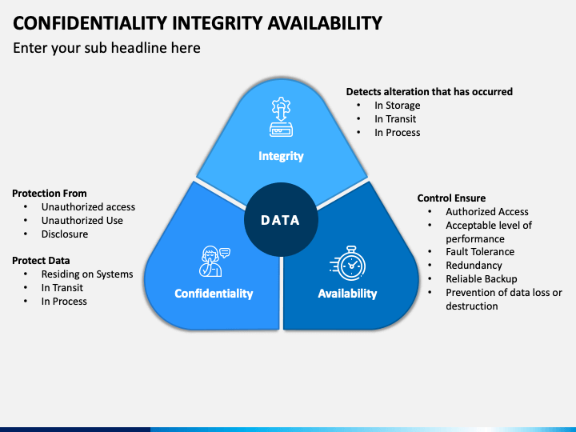

CyberSecurity
I have developed a range of practical scenarios for each topic. Should you need access to these resources, please do not hesitate to contact me. Furthermore, I have delivered over 100 tailored Cybersecurity Assessment Reports for a wide variety of organizations, effectively addressing their distinct risk profiles and specific requirements.
The Complete Architecture’s Guide

Introductory
Layers of security in cybersecurity
| Security Layer | Description | Key Measures |
|---|---|---|
| 1. Physical Security | Protects physical components of information systems. | Secure access, surveillance, environmental controls |
| 2. Network Security | Safeguards infrastructure and data during transmission. | Firewalls, IDPS, VPNs, secure networks |
| 3. Endpoint Security | Protects individual devices such as computers and mobile devices. | Antivirus, antimalware, EDR tools, device encryption |
| 4. Application Security | Secures applications from vulnerabilities throughout their lifecycle. | Secure coding, testing, patch management, WAFs |
| 5. Data Security | Protects sensitive data from unauthorized access and leaks. | Data encryption, access controls, data masking, backups |
| 6. User Awareness and Training | Ensures employees recognize threats and understand security policies. | Training on phishing, social engineering, safe practices |
| 7. Identity and Access Management | Manages user identities and controls access based on roles. | MFA, SSO, strict password policies |
| 8. Incident Response and Management | Establishes plans for responding to security incidents. | Incident response team, drills, reporting procedures |
| 9. Security Monitoring and Logging | Monitors systems for signs of security breaches continuously. | SIEM systems for log aggregation and analysis |
| 10. Compliance and Governance | Ensures adherence to regulations and standards. | Periodic audits, assessments, and compliance checks |
Implementing these layered security controls provides a comprehensive defense against various threats, enhancing resilience and reducing the likelihood of successful attacks.
Information Assurance (IA)
IA is for protecting information system.

Integrity
- Having AntiVirus
- Having Policies
- Data will not be tampered(altered or destroyed)
Availability
- Who are allowed/blocked to access
Authetication
- Identify facets
Confidentiality
- Access by those authorized
Non-repudiation
- someone can not deny his/her action
Network Defence Approch [1]
Preventive
- Firewalls
- Prevention Systems(IDS, IPS systems like snort)
- Intrusion Detection
- AntiVirus
Reactive
- Responds to past and present threads
- Cover net monitoring for anomalies, forensics, and incident response
- Ad-blockers
- Spam filters
- Password manager
- AntiVirus programming
Retrospective
- Causes for atk(after atks)
- Use protocols to:
- Analyze
- Monitored net traffic
- Prevent it from ever happening
Proactive
- Anticipation of an atk against:
- With aims of countering future atks.
Data security and threat detection
Terminology in Data Security
| Term | Definition | Common Use Cases |
|---|---|---|
| True Positive (TP) | A correct identification of a security threat. The system correctly detects an actual threat. | Identifying a successful malware attack on a system. |
| True Negative (TN) | A correct identification of benign activity. The system correctly identifies that there is no threat. | Confirming that a legitimate user activity is not malicious. |
| False Positive (FP) | An incorrect identification where a benign activity is incorrectly flagged as a threat. | Detecting legitimate software behavior as malware, leading to unnecessary alerts. |
| False Negative (FN) | An incorrect identification where an actual threat goes undetected or is incorrectly classified as benign. | Failing to identify a security breach because the detection system did not recognize it. |
| Precision | The ratio of true positives to the total predicted positives (TP / (TP + FP)). Higher precision means fewer false positives. | Important in environments where false alerts can disrupt operations. |
| Recall (Sensitivity) | The ratio of true positives to the total actual positives (TP / (TP + FN)). Higher recall means better detection of threats. | Critical for ensuring that security measures catch as many threats as possible. |
| F1 Score | The harmonic mean of precision and recall, providing a balance between the two (2 (Precision Recall) / (Precision + Recall)). | Useful in scenarios where both false positives and false negatives are costly. |
| ROC Curve | A graphical representation of the true positive rate versus the false positive rate. | Helps evaluate the trade-offs between sensitivity and specificity in threat detection models. |
Use Cases for Each Term
-
True Positive (TP):
- Security software successfully identifies and quarantines a phishing email that contains a malicious link.
-
True Negative (TN):
- An employee’s genuine access to a secure document is correctly classified as permitted, preventing unnecessary alerts to security teams.
-
False Positive (FP):
- An application that performs normal data transmission is flagged and quarantined as potential data exfiltration, leading to communication disruptions.
-
False Negative (FN):
- A new strain of malware infiltrates the network, but the detection system fails to recognize it due to outdated signatures, allowing the malware to execute.
-
Precision:
- In a company where every alert has a significant operational cost, high precision is crucial to minimize unnecessary investigations.
-
Recall (Sensitivity):
- In a healthcare environment, high recall is vital to catch all potential breaches that might expose patient information, regardless of the resulting false alarms.
-
F1 Score:
- In a fraud detection system where both missing fraudulent transactions and wrongly flagging legitimate transactions can lead to financial losses.
-
ROC Curve:
- A security analyst uses the ROC curve to determine the optimal threshold for a new intrusion detection system that balances the rates of true and false positives.
These metrics guide organizations in their threat detection efforts, helping them fine-tune their security measures while minimizing operational disruptions and maximizing security efficacy. Regular analysis of these metrics can inform necessary adjustments and enhancements to detection algorithms and configurations.
Indicates the Techniques
| Phase | Description | Techniques (Examples) |
|---|---|---|
| Reconnaissance | Gathering information about the target to identify vulnerabilities. | - Open Source Intelligence (OSINT) - Network Scanning - Social Engineering |
| Resource Development | Establishing or acquiring resources needed for the attack. | - Malware Development - Infrastructure Setup (e.g., servers for command and control) |
| Initial Access | Gaining entry into the target environment. | - Phishing (e.g., Email attachments, links) - Exploit Public-Facing Applications |
| Execution | Running malicious code on the target system. | - Command-Line Interface (CLI) Execution - Malicious Scripts |
| Persistence | Maintaining access to the target over time. | - Registry Run Keys/Startup Folder - Scheduled Tasks |
| Privilege Escalation | Gaining higher privileges than initially acquired. | - Exploiting Vulnerabilities - Bypass User Account Control (UAC) |
| Defense Evasion | Avoiding detection and defensive measures. | - Obfuscated Files or Information - Timestomp |
| Credential Access | Obtaining valid credentials for further access. | - Credential Dumping - Keylogging |
| Discovery | Understanding the environment for further action. | - System Information Discovery - Network Share Discovery |
| Lateral Movement | Moving within the network after initial access. | - Remote Services (e.g., SMB, RDP) - Pass-the-Hash |
| Collection | Gathering sensitive data from the target. | - Data Staged for Exfiltration - Screen Capture |
| Command and Control | Establishing a channel to control compromised systems. | - Web Service (e.g., HTTP, HTTPS) - DNS Tunneling |
| Exfiltration | Extracting data from the target. | - Data Encoding/Obfuscation - Exfiltration Over Command and Control Channel |
| Impact | Disrupting the target’s operations or damaging systems. | - Data Destruction - Service Stop |
Common vulnerability
| Vulnerability | Description | Danger Level | Common Use-Cases | Prevalence (%) | Challenges Faced by Companies | Mitigation Strategies | Example Attacks | Specific Attack Vectors |
|---|---|---|---|---|---|---|---|---|
| XSS | Enables attackers to execute scripts in the user’s browser, potentially stealing cookies. | High | User input fields, comment sections | ~40% | Proper input sanitization, CSP | Sanitize user inputs, use Content Security Policy (CSP) | Stealing session cookies, redirecting users | Stored XSS, Reflected XSS, DOM-based XSS |
| CSRF | Tricks users into making unwanted actions on web applications where they are authenticated. | Medium | Form submissions, state-changing requests | ~30% | Tokenization, user session management | Implement anti-CSRF tokens, same-site cookies | Changing user email or password without consent | State-changing requests |
| SQL Injection | Allows attackers to execute arbitrary SQL queries on the database, leading to data exposure or manipulation. | High | Dynamic database queries | ~35% | Input validation, proper ORM usage | Use prepared statements, parameterized queries | Extracting sensitive data, deleting records | Tautology-based, Union-based, Error-based |
| XXE | Occurs when an external entity is injected through XML input, leading to data exposure. | High | XML processing, API integrations | ~25% | Misconfigured parsers | Disable DTD processing, use safer libraries | Reading local files, SSRF (Server-Side Request Forgery) | External entity resolution |
| LFI | Allows an attacker to include files on a server through user input. | High | Misconfigured web applications | ~20% | Input validation, file access controls | Validate and sanitize user inputs, restrict file paths | Accessing sensitive files (e.g., /etc/passwd) | Directory traversal |
| RCE | Remote Code Execution allows attackers to execute arbitrary commands on the server. | Critical | File upload, deserialization vulnerabilities | ~15% | Code reviews, secure coding practices | Validate inputs, use whitelists for file types | Executing shell commands, malware installation | Code injection, Command injection |
| Insecure Direct Object Reference (IDOR) | Allows attackers to access or modify objects that they are not authorized to. | Medium | Parameter manipulation in URL requests | ~20% | Authorization checks | Implement access controls, validate user permissions | Accessing other users’ resources | URL manipulation |
| Open Redirect | Allows an attacker to redirect users to an untrusted site, often used for phishing. | Medium | Link manipulation | ~10% | Input validation, whitelisting | Validate redirect URLs, use a whitelist for valid URLs | Phishing attacks, redirecting to malicious sites | Redirecting with query parameters |
| HTTP Response Splitting | Attacker manipulates HTTP headers to inject additional responses. | Medium | Unvalidated inputs in headers | ~5% | Header validation | Sanitize user inputs, validate and encode headers | HTTP header injection, session fixation | Header injection |